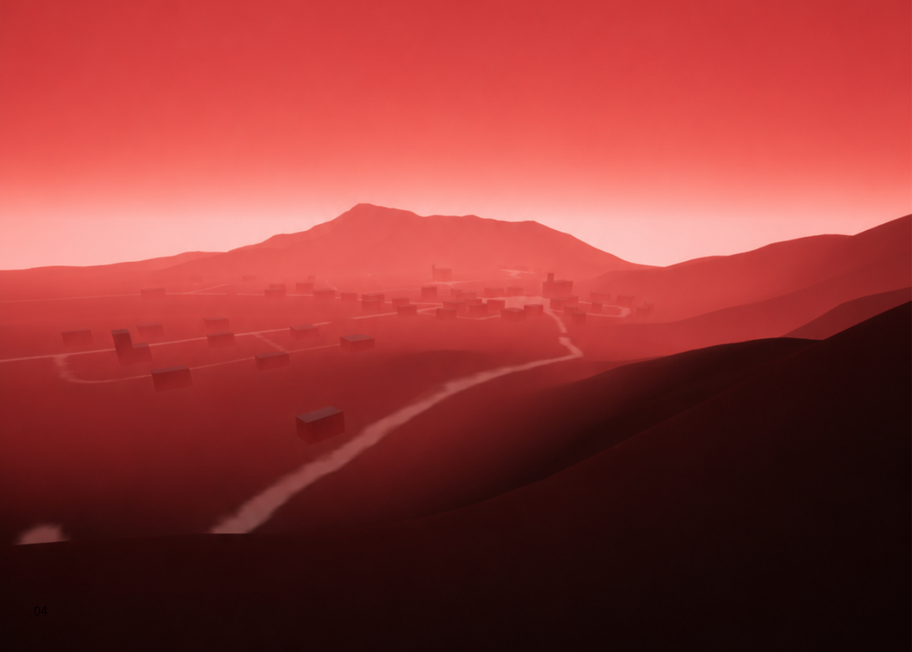
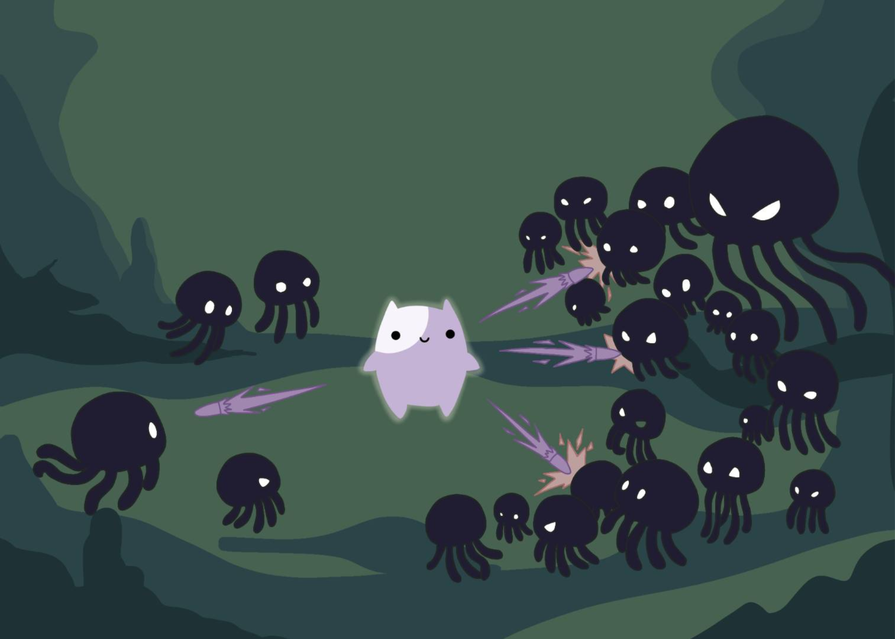
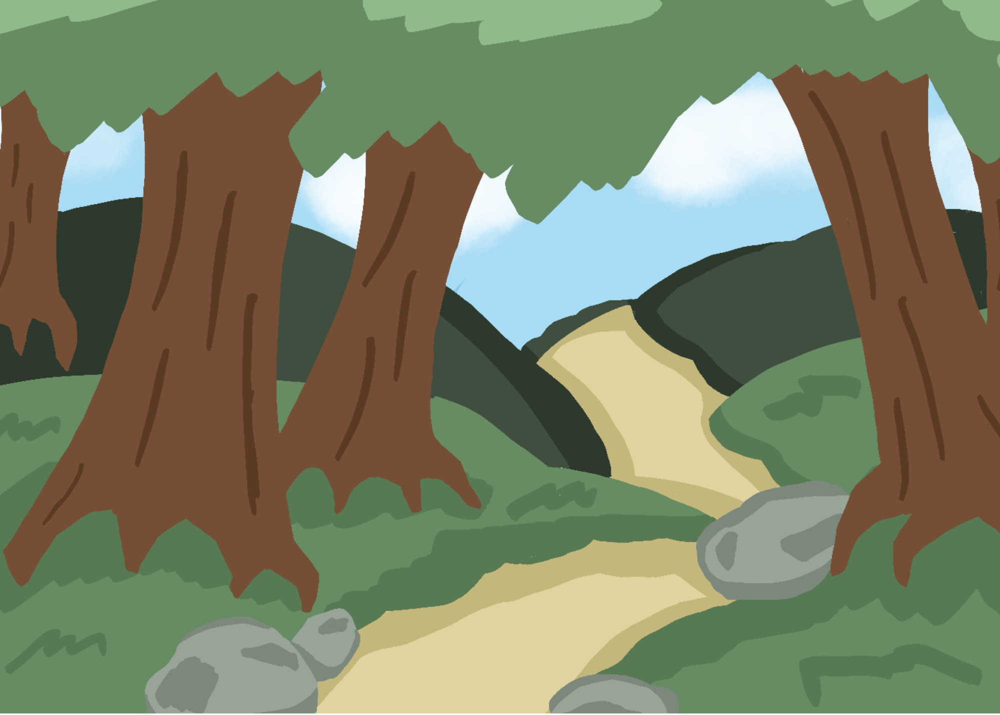
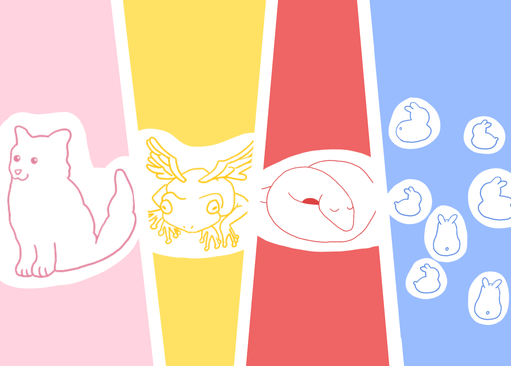

我的作品
點擊專案可詳細查看內容說明

Megalophobia
這個村莊的人全瘋了
他們信奉詭異的宗教
然後召喚了那個東西...
他們全都實現飛升了
但你不一樣
你並不想要飛升....
最後的濕地-重生
在污染蔓延的未來城市中
濕地成為最後的淨化希望
透過種植與配置植物
逐步降低水中污染
重建生態平衡
在有限資源下做出選擇
讓這片濕地重新恢復生機

精靈打水母
在幽暗的深海中
大量水母不斷從黑暗中湧現
你將操控微弱發光的小精靈
一邊閃避攻擊 一邊發射子彈生存下去
透過擊敗敵人取得經驗與技能
在包圍之中不斷變強
挑戰自己能存活多久

小心暑翹翹
露營不只是搭帳篷
而是理解環境
哪裡安全哪裡危險
什麼該帶什麼不該帶
很多意外不是突然發生
而是早就被忽略
這一次
你能看見嗎？

2D動畫
動畫不只是重現畫面
而是重新理解情感
把熟悉的旋律
變成另一個世界的故事
角色改變了
場景改變了
但那些情緒依然存在
有些畫面是在致敬
有些畫面是在重生